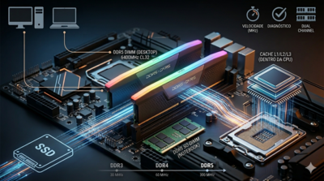
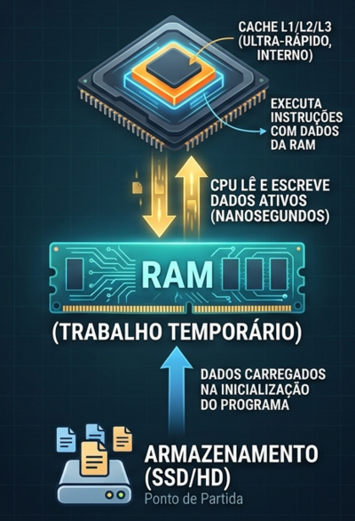
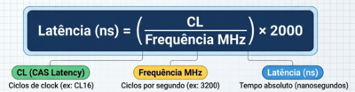
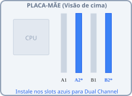

📘 Aula 06 - Memória RAM: Tipos, Funcionamento, Instalação e Diagnóstico

1. Introdução
A memória RAM (Random Access Memory) é o espaço de trabalho temporário do computador. Enquanto o processador executa instruções, os dados ativos — programas abertos, arquivos em edição, estado do sistema operacional — ficam armazenados na RAM.
Definição: memória volátil de acesso aleatório que armazena temporariamente os dados em uso pelo processador.
Volátil significa que todo o conteúdo é perdido quando o computador é desligado.
A RAM difere do armazenamento (HD/SSD) em dois aspectos fundamentais:
| RAM | Armazenamento (SSD/HD) | |
|---|---|---|
| Velocidade | Muito alta (GB/s) | Menor (MB/s a GB/s) |
| Volatilidade | Perde dados sem energia | Retém dados sem energia |
| Função | Dados em uso agora | Dados persistentes |
2. Como a RAM Funciona
O processador não lê dados diretamente do armazenamento durante a execução — isso seria lento demais. O fluxo é:

Quando a RAM está cheia, o sistema operacional usa o armazenamento como memória virtual (swap) — o que causa queda severa de desempenho, pois o acesso ao SSD/HD é ordens de magnitude mais lento.
3. Tipos de Módulo
3.1 DIMM — Desktop
DIMM (Dual Inline Memory Module) é o formato padrão para desktops. Os pinos dos dois lados do módulo são independentes eletricamente.
- Comprimento físico: ~133 mm
- Slots: placas-mãe ATX geralmente possuem 2 ou 4 slots DIMM
3.2 SO-DIMM — Notebooks e Compactos
SO-DIMM (Small Outline DIMM) é a versão compacta para notebooks, mini-PCs e alguns all-in-ones.
- Comprimento físico: ~67 mm
- Mesmo padrão elétrico (DDR4/DDR5), mas fisicamente incompatível com slots DIMM
⚠️ DIMM e SO-DIMM não são intercambiáveis. Um módulo SO-DIMM não encaixa em uma placa-mãe desktop e vice-versa.
4. Padrões DDR — Evolução
DDR significa Double Data Rate: a memória transfere dados duas vezes por ciclo de clock (na borda de subida e na borda de descida do sinal).
Comparativo entre gerações
| Padrão | Frequência efetiva | Tensão | Notch (entalhe) | Status |
|---|---|---|---|---|
| DDR3 | 800–2133 MHz | 1,5V | Posição A | Legado |
| DDR4 | 2133–3200 MHz (base) até 5000+ MHz (OC) | 1,2V | Posição B | Amplamente ativo |
| DDR5 | 4800–6400 MHz (base) até 8000+ MHz (OC) | 1,1V | Posição C | Atual (AM5, LGA1700+) |
⚠️ Cada geração DDR possui entalhe em posição diferente, tornando a instalação de um padrão incorreto fisicamente impossível — proteção contra dano por engano.
💡 DDR5 possui regulador de tensão integrado no próprio módulo (PMIC), diferente das gerações anteriores onde a regulação era feita pela placa-mãe. Isso melhora a estabilidade mas altera o comportamento em diagnóstico.
5. Frequência, Latência e Desempenho
5.1 Frequência
Medida em MHz, indica quantas operações de transferência ocorrem por segundo. Frequência mais alta = mais dados transferidos por unidade de tempo.
💡 A frequência da RAM é limitada pelo menor valor entre o módulo instalado e o suporte da placa-mãe/CPU. Instalar RAM DDR4-3200 em placa que suporta apenas DDR4-2666 faz o módulo operar a 2666 MHz.
5.2 Latência CAS (CL)
A latência CAS (Column Address Strobe) indica o número de ciclos de clock que a memória leva para responder a um comando de leitura.
- Notação: CL16, CL18, CL30, etc.
- Menor CL = menor latência = resposta mais rápida
5.3 Latência Real em Nanosegundos
O que importa para o desempenho real é a latência absoluta em ns, calculada assim:

Exemplos:
| Módulo | CL | Latência real |
|---|---|---|
| DDR4-3200 CL16 | 16 | (16 / 3200) × 2000 = 10,0 ns |
| DDR4-3600 CL18 | 18 | (18 / 3600) × 2000 = 10,0 ns |
| DDR5-6000 CL30 | 30 | (30 / 6000) × 2000 = 10,0 ns |
| DDR5-4800 CL40 | 40 | (40 / 4800) × 2000 = 16,7 ns |
💡 Frequência alta com CL alto pode resultar na mesma latência real que frequência menor com CL menor. O par frequência + CL deve ser avaliado em conjunto — não apenas um dos valores isoladamente.
5.4 Timings Completos
Além do CL, a RAM possui outros timings (ex: 16-18-18-38) que afetam o desempenho em operações específicas. Para o contexto do curso técnico, o foco no CL e na frequência é suficiente para entender e comparar módulos.
6. Capacidade e Configurações Típicas
| Uso | Capacidade recomendada |
|---|---|
| Uso básico (escritório, web) | 8 GB |
| Uso intermediário (multitarefa, edição leve) | 16 GB |
| Uso exigente (edição de vídeo, VMs, jogos modernos) | 32 GB |
| Workstation / servidores | 64 GB+ |
💡 O sistema operacional Windows 11 consome entre 2–4 GB em idle. Com 4 GB de RAM total, o sistema já inicia com pouca margem — travamentos e uso intenso de swap são esperados.
7. Dual Channel
O que é
Dual channel é um modo de operação em que dois módulos de RAM trabalham em paralelo, dobrando a largura de banda disponível para o processador.
Como ativar
A instalação deve seguir os slots indicados pelo fabricante da placa-mãe — geralmente os slots A2 e B2 (segundo e quarto slots, contando a partir do socket), não os slots adjacentes.

⚠️ Instalar os dois módulos nos slots A1 e A2 (adjacentes) não ativa dual channel — opera em single channel com metade da largura de banda.
Impacto prático
| Componente | Impacto do dual channel |
|---|---|
| CPU com GPU integrada (iGPU) | Alto — a iGPU usa a RAM como VRAM; single channel reduz desempenho gráfico drasticamente |
| CPU com GPU dedicada | Moderado — menor impacto, mas ainda relevante em jogos e aplicações multithread |
💡 Em sistemas com processadores que possuem GPU integrada (Intel Core com UHD, AMD Ryzen com Vega/RDNA), o dual channel é tão importante quanto a frequência da RAM.
8. XMP e EXPO — Perfis de Alta Frequência
Módulos de RAM são fabricados para operar em frequências acima do padrão JEDEC, mas chegam configurados na frequência base por padrão.
| Perfil | Fabricante | Função |
|---|---|---|
| XMP (Extreme Memory Profile) | Intel / módulos em geral | Ativa frequência e timings otimizados no BIOS |
| EXPO (Extended Profiles for Overclocking) | AMD | Equivalente ao XMP para plataforma AM5 |
💡 Ao instalar RAM DDR4-3600 em um sistema, ela pode iniciar a 2133 MHz (padrão JEDEC) até que o XMP/EXPO seja ativado nas configurações de BIOS/UEFI.
9. Instalação Física
Procedimento
- Identificar os slots corretos para dual channel no manual da placa-mãe
- Abrir as travas laterais dos slots
- Alinhar o entalhe do módulo com a protuberância do slot — só encaixa em uma direção
- Pressionar firmemente e de forma uniforme nas duas extremidades até as travas laterais fecharem automaticamente
- Verificar visualmente que as travas estão completamente fechadas nos dois lados
⚠️ Módulo parcialmente encaixado é uma das causas mais comuns de falha de POST e erros de memória. Sempre verificar o fechamento das travas antes de ligar o sistema.
Tensão e energia
A RAM recebe alimentação pelo trilho +3,3V do conector ATX 24 pinos. O consumo por módulo DDR4 é tipicamente de 2–5W — baixo em relação aos demais componentes, mas relevante para o dimensionamento em sistemas com muitos módulos.
10. Diagnóstico de Falhas de Memória
Sintomas comuns
| Sintoma | Possível causa relacionada à RAM |
|---|---|
| Sistema não realiza POST, sem vídeo | Módulo mal encaixado, slot defeituoso ou módulo incompatível |
| Tela azul (BSOD) com erros de memória | Módulo com células defeituosas, XMP instável |
| Travamentos aleatórios sob carga | RAM insuficiente (swap excessivo) ou módulo degradado |
| Sistema inicia com menos RAM que o instalado | Módulo não reconhecido (slot ou encaixe com problema) |
| Erros após overclock de RAM | XMP/EXPO instável; tentar reduzir frequência ou aumentar tensão levemente |
Ferramentas de diagnóstico
| Ferramenta | Tipo | Função |
|---|---|---|
| MemTest86 | Bootável (independente de SO) | Teste completo de integridade das células de memória |
| Windows Memory Diagnostic | Integrado ao Windows | Teste básico acessível sem ferramentas externas |
| CPU-Z | Software Windows | Leitura de frequência, timings e identificação do módulo |
Procedimento de isolamento em bancada
- Testar com um módulo por vez — isola qual módulo ou slot está com problema
- Testar cada módulo em slots diferentes — isola se o problema é no módulo ou no slot
- Limpar os contatos dourados do módulo com borracha branca — oxidação leve pode causar mau contato
- Resetar configurações de BIOS (bateria CMOS ou jumper CLR_CMOS) — descarta perfil XMP instável como causa
🎯 Síntese da Aula
| Conceito | Ponto central |
|---|---|
| Função da RAM | Memória de trabalho temporária e volátil |
| DIMM vs SO-DIMM | Desktop vs compacto — fisicamente incompatíveis |
| DDR4 vs DDR5 | Frequência, tensão e entalhe diferentes; não intercambiáveis |
| Frequência + CL | Avaliar latência real em ns, não apenas um valor isolado |
| Dual channel | Dobra largura de banda; slots corretos são essenciais |
| XMP / EXPO | Perfis de frequência elevada ativados no BIOS |
| Instalação | Entalhe garante orientação correta; travas devem fechar completamente |
| Diagnóstico | MemTest86 para teste completo; isolamento por módulo e slot |